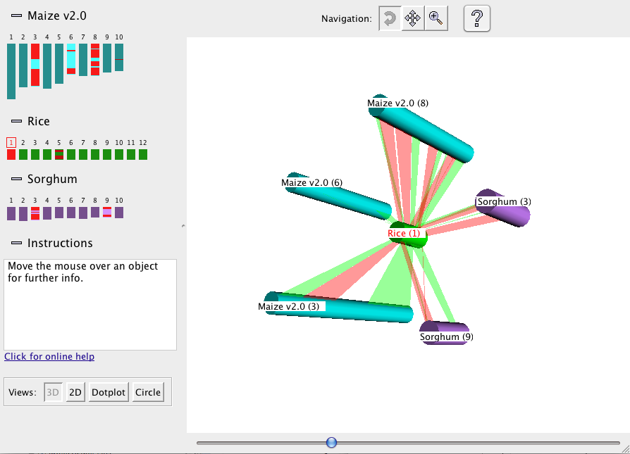

User Guide for 3D
The 3D display shows the selected chromosomes arrayed at equal spacing around the reference, which is
placed in the center (see figure below):
|
The synteny blocks are shown as colored ribbons, with direct synteny blocks colored red, and inverted
blocks colored green. (Note that the direct and inverse designations are for the overall block, but blocks may
contain smaller-scale regions which are inverted relative to the block as a whole.)
Drag the mouse over
the 3D view to rotate, move, or zoom the view, depending on which of the three Navigation buttons at the top is
selected. For example, if the leftmost button is selected, as shown in the figure, then dragging with the
mouse causes the figure to rotate.
|

|
|
The 3D view shown is only available if the Java 3D libraries exist. The 3D libraries have become almost obsolete, but
still exist in cyberspace.
The following describes how to use them with SyMAP (however, I have not verified it works).
- You must obtain the following jar files:
j3dcore.jar, j3dutils.jar, vecmath.jar, jogl.jar, gluegen-rt.jar
- Either:
- Email symap@agcol.arizona.edu for the symap3D.jar file, or
- Obtain the SyMAP code from Github.
Uncomment the lines in the Makefile that create the symap3D.jar and 3D classes, then make.
- Create a script similar to the following, but change what is necessary to access the 3D jar files:
#!/bin/sh
mem="8192m";
echo "--- SyMAP with query and view - with 3D ($mem) ----";
java -Xmx$mem -classpath java/jar/symap3D.jar symap3D.ProjectManagerFrame3D -r $@
|
|
Email Comments To: symap@agcol.arizona.edu
|
|

{kind=link}